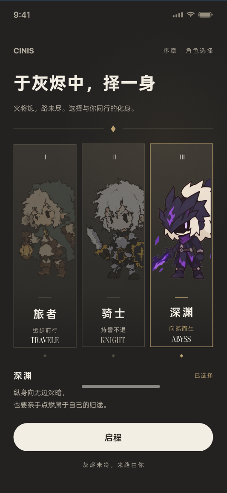
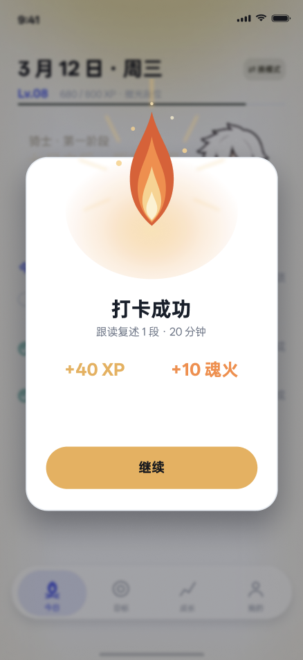
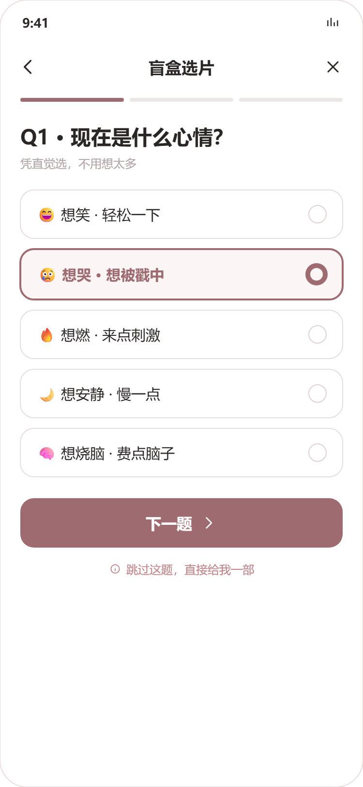
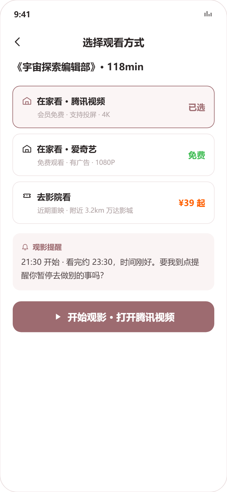
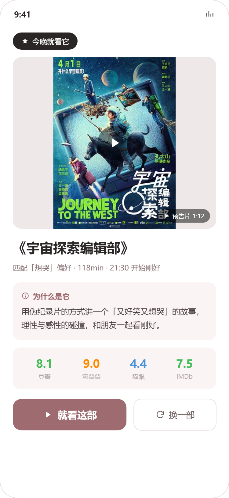
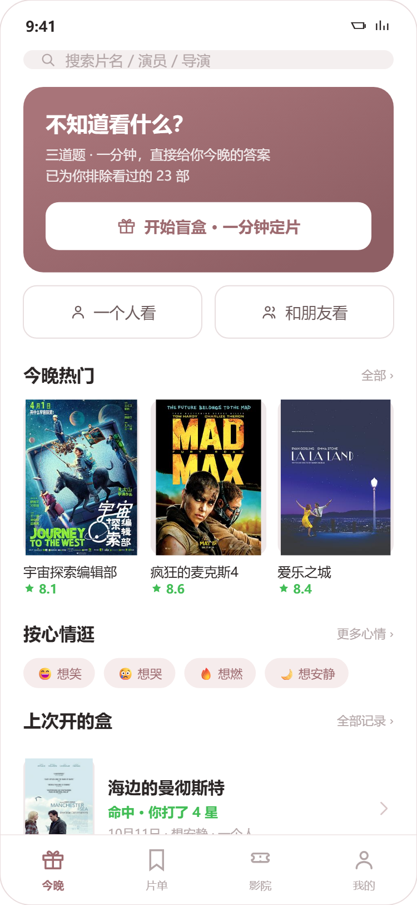
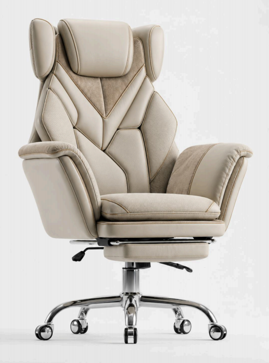

移动端 UI、交互设计
用角色成长串起每日任务，从选择专注方式，到打卡后的即时反馈。



移动端 UI、课程设计
回答三道关于观影的问题，再开盒看看今晚可以看什么。
选择角色，从今天的一项任务开始。通过专注或快速打卡完成记录，查看成长反馈。

用三道问题收集观影偏好，开盒推荐一部电影，并给出观看渠道。
交互原型、空间可视化
从湖面到山径，在可旋转的三维地图中探索西湖。
文创设计、桌游
以云南为主题的棋类文创，设计覆盖棋盘、配件、包装与角色形象。

工业设计、座椅
通过多视角、配色对照和桌前场景，呈现座椅造型与支撑构想。